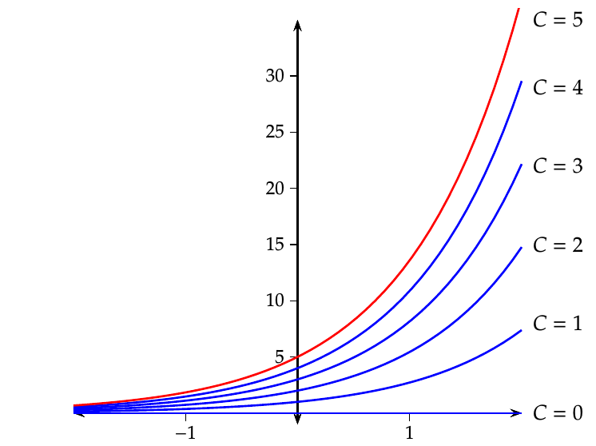

Ecuaciones diferenciales ordinarias Definición de las ecuaciones diferenciales ordinarias En muchos problemas de geometría, física, química, etc, seq presentan a menudo ecuaciones que relacionan una función con su derivada o derivadas sucesivas. Definición - Ecuación diferencial ordinaria. Se llama ecuación diferencial ordinaria (E.D.O.) a una ecuación que relaciona una variable independiente $x$, una función desconocida $y(x)$, y las derivadas de $y$ de diversos órdenes $y’,y’’,\ldots,y^{(n}$; es decir una expresión de la forma $$F(x, y, y’, y’’,\ldots, y^{(n})=0.$$ Se llama orden de la ecuación diferencial al mayor de los órdenes de las derivadas que contienen la ecuación. Ejemplo. La ecuación $y\prime\prime\prime+\operatorname{sen}(x)y’=2x$ es una ecuación diferencial ordinaria de tercer orden. Deducción de una ecuación diferencial Para deducir la ecuación diferencial que explica un fenómeno es fundamental saber interpretar las derivadas de una función. Ejemplo Una de las leyes de la termodinámica de Newton dice “La velocidad de enfriamiento de un cuerpo en el aire es proporcional a la diferencia de temperatura $T$ del cuerpo y la temperatura $T_a$ del aire.” La velocidad de enfriamiento es la variación instantánea de la temperatura con respecto al tiempo, es decir, la derivada de la temperatura con respecto al tiempo $dT/dt$. Por tanto, el fenómeno anterior puede describirse mediante la ecuación diferencial $$\frac{dT}{dt}=k(T-T_a),$$ donde $k$ es una constante de proporcionalidad. Solución de una ecuación diferencial ordinaria Definición - Solución de una ecuación diferencial ordinaria. Se llama solución de una ecuación diferencial ordinaria $F(x,y,y’,y’’,\ldots,y^{(n})=0$ a cualquier función $y =f(x)$ tal que al sustituirla en la ecuación la convierte en una igualdad; es decir $$F(x,f(x), f’(x), f’’(x),\ldots, f^{(n}(x))=0.$$ La gráfica de la solución de una ecuación diferencial ordinaria se llama curva integral. Resolver o integrar una ecuación diferencial ordinaria consiste en hallar todas sus soluciones en un dominio dado. Para ello, habrá que recurrir al cálculo integral. De igual modo que al integrar una función aparece una constante que nos da la familia de primitivas de la función, al integrar una ecuación diferencial ordinaria surgen varias constantes arbitrarias. Dando valores a dichas constantes se obtienen todas las soluciones de la ecuación. Definición - Solución general de una E.D.O.. Se llama solución general de una ecuación diferencial ordinaria de orden $n$, a una función de la forma $$y =f (x,C_1,\ldots,C_n)$$ que es solución de la ecuación diferencial para cualquier valor que tomen las constantes $C_1,\ldots,C_n$. Para cada valor que tomen las constantes se obtiene una solución particular de la ecuación diferencial. Por ello, una E.D.O. tiene infinitas soluciones. Geométricamente, la solución general representa una familia de curvas integrales de la ecuación diferencial. A menudo, se suelen imponer condiciones para reducir el número de soluciones de la ecuación diferencial. En muchos casos estas condiciones permiten fijar los valores de las constantes y así obtener una solución particular a partir de la solución general. Ecuaciones diferenciales ordinarias de primer orden Vamos a estudiar la resolución de E.D.O. de primer orden, $$F(x,y,y’)=0.$$ La solución general de una E.D.O. de primer orden es $$y = f (x,C),$$ de manera que para obtener una solución particular de la ecuación basta con darle valor a la constante $C$, y para ello es suficiente con fijar una condición inicial. Definición - Problema del valor inicial. Al conjunto formado por una ecuación diferencial ordinaria de primer orden y una condición inicial se le llama problema del valor inicial: $$ \begin{cases} F(x,y,y’)=0, & \mbox{Ecuación diferencial de primer orden;} \newline y(x_0)=y_0, & \mbox{Condición inicial.} \end{cases} $$ Resolver un problema del valor inicial consiste en encontrar una solución de la ecuación diferencial que cumpla la condición inicial. Ejemplo. Recordemos la ecuación diferencial de primer orden que explicaba el enfriamiento de un cuerpo en el aire: $$\frac{dT}{dt}=k(T-T_a),$$ donde $T$ es la temperatura del cuerpo y $T_a$ la del aire. Es fácil comprobar que la solución general de esta ecuación diferencial es $$T(t) = Ce^{kt}+T_a.$$ Si imponemos la condición inicial de que en el instante inicial el cuerpo estaba a $5$ ºC, es decir, $T(0)=5$, tenemos $$T(0) = Ce^{k\cdot0}+T_a = C+T_a = 5,$$ de donde se deduce que $C=5-T_a$, y esto nos lleva a la solución particular $$T(t) = (5-T_a)e^{kt}+T_a.$$ Por último, en el caso de que la temperatura del aire fuese $T_a=0$ ºC y $k=1$, la solución general de la ecuación sería $$T(t)=Ce^t,$$ lo que nos daría la siguiente familia de curvas integrales  de las cuales, la solución del problema del valor incial es la función cuya gráfica pasa por el punto $(0,5)$. Existencia y unicidad de soluciones Teorema - Existencia y unicidad de la solución de una E.D.O.. Dado un problem del valor inicial $$\begin{cases} y’=F(x,y);\newline y(x_0)=y_0; \end{cases} $$ si $F(x,y(x))$ es una función continua en un intervalo abierto alrededor del punto $(x_0,y_0)$, entonces existe una solución del problema del valor inicial. Si, además, $\frac{\partial F}{\partial y}$ es continua en un intervalo abierto alrededor de $(x_0,y_0)$, la solución es única. Aunque este teorema nos garantiza la existencia y la unicidad de las soluciones no nos proporciona un método para llegar a ellas. En realidad, no existe un método general para resolver ecuaciones diferenciales de primer orden pero veremos cómo resolver algunos tipos especiales de ellas: De variables separables, Homogéneas, Lineales. E.D.O. de variables separables Definición - E.D.O. de variables separables. Una ecuación diferencial ordinaria de variables separables es una ecuación diferencial de primer orden que puede escribirse de la forma $$y’g(y)=f(x),$$ o lo que es lo mismo, $$g(y)dy=f(x)dx,$$ de manera que a un lado de la igualdad sólo aparece la variable $y$ y al otro la variable $x$ (las variables están separadas). La solución general de esta ecuación diferencial se obtiene integrando ambos lados de la igualdad $$\int g(y)\,dy = \int f(x)\,dx+C.$$ Ejemplo. La ecuación diferencial que explica el enfriamiento de un cuerpo en el aire $$\frac{dT}{dt}=k(T-T_a),$$ es una ecuación diferencial de variables separables ya que puede escribirse $$\frac{1}{T-T_a}dT=k\,dt.$$ Integrando ambos miembros de la igualdad tenemos $$\int \frac{1}{T-T_a}\,dT=\int k\,dt\Leftrightarrow \log(T-T_a)=kt+C,$$ y despejando $T$ llegamos a la solución general de la ecuación $$T(t)=e^{kt+C}+T_a=e^Ce^{kt}+T_a=Ce^{kt}+T_a,$$ reescribiendo $C=e^C$ como una constante arbitraria. E.D.O. homogéneas Definición - Función homogénea. Una función $f(x,y)$ es homogénea de grado $n$, si para cualquier valor $k$ se cumple $$f(kx,ky)= k^nf(x,y).$$ En particular, para una función homogénea de grado $0$ siempre se cumple $$f(kx,ky)=f(x,y).$$ En concreto, si tomamos $k=1/x$ tenemos $$ f(x,y)=f\left(\frac{1}{x}x,\frac{1}{x}y\right)=f\left(1,\frac{y}{x}\right)=g\left(\frac{y}{x}\right), $$ de manera que una función homogénea de grado $0$ siempre puede escribirse como una función de $u=y/x$: $$f(x,y)=g\left(\frac{y}{x}\right)=g(u).$$ Definición - E.D.O. homogénea. Una ecuación diferencial ordinaria homogénea es una ecuación diferencial de primer orden que puede escribirse de la forma $$y’=f(x,y),$$ donde $f(x,y)$ es una función homogénea de grado $0$. La solución de esta ecuación diferencial se obtiene realizando el cambio de variable $$u=\frac{y}{x}\Leftrightarrow y=ux,$$ con lo que la ecuación diferencial anterior se convierte en $$u’x+u=f(u),$$ que es de variables separables. Una vez resuelta la ecuación diferencial anterior, sólo queda deshacer el cambio de variable. Ejemplo. Consideremos la siguiente ecuación diferencial $$4x-3y+y’(2y-3x)=0.$$ Escribiéndola de la forma $$y’=\frac{3y-4x}{2y-3x}$$ se puede ver fácilmente que es homogénea. Para resolverla hacemos el cambio de variable $y=ux$ y se obtine $$u’x+u=\frac{3ux-4x}{2ux-3x}=\frac{3u-4}{2u-3}$$ que es de variables separables, y separando las variables se llega a $$u’x=\frac{3u-4}{2u-3}-u=\frac{-2u^2+6u-4}{2u-3}\Leftrightarrow \frac{2u-3}{-2u^2+6u-4}\,du=\frac{1}{x}\,dx.$$ Integrando ahora ambos miembros obtenemos $$\renewcommand{\arraystretch}{2} \begin{array}{c} \displaystyle \int \frac{2u-3}{-2u^2+6u-4}\,du=\int \frac{1}{x}\,dx \Leftrightarrow -\frac{1}{2}\log|u^2-3u+2|=\log|x|+C \Leftrightarrow\newline \Leftrightarrow \log|u^2-3u+2|=-2\log|x|-2C, \end{array}$$ y aplicando la función exponencial a ambos miembros y simplificando llegamos a la solución $$u^2-3u+2=e^{-2\log|x|-2C}=\frac{e^{-2C}}{e^{\log|x|^2}}=\frac{C}{x^2},$$ reescribiendo $C=e^{-2C}$, como una constante arbitraria. Finalmente, deshaciendo el cambio inicial de variable $u=y/x$, llegamos a la solución general de la ecuación $$\left(\frac{y}{x}\right)^2-3\frac{y}{x}+2=\frac{C}{x^2}\Leftrightarrow y^2-3xy+2x^2=C.$$ E.D.O. lineales Definición - E.D.O. lineal. Una ecuación diferencial ordinaria lineal es una ecuación diferencial de primer orden que puede escribirse de la forma $$y’+g(x)y = h(x).$$ Resolución de una E.D.O. Lineal Para resolver esta ecuación diferencial, intentamos poner el primer miembro como derivada de un producto. Para ello multiplicamos los dos miembros de la igualdad por una función $f(x)$ tal que $$f’(x)=g(x)f(x).$$ De esta manera tenemos $$\begin{array}{c}ç y’f(x)+g(x)f(x)y=h(x)f(x)\newline \Updownarrow\newline y’f(x)+f’(x)y=h(x)f(x)\newline \Updownarrow\newline \dfrac{d}{dx}(yf(x))=h(x)f(x) \end{array}$$ Integrando ambos miembros de la ecuación anterior llegamos a la solución $$yf(x)=\int h(x)f(x)\,dx+C.$$ Por otro lado, la única función que cumple $f’(x)=g(x)f(x)$ es $$f(x)=e^{\int g(x)\,dx},$$ de modo que, al sustituir en la solución anterior, llegamos a la solución general de una ecuación diferencial lineal $$ye^{\int g(x)\,dx}=\int h(x) e^{\int g(x)\,dx}\,dx+C,$$ o lo que es lo mismo Solución de un ecuación diferencial homogenea $$y=e^{-\int g(x)\,dx}\left(\int h(x)e^{\int g(x)\,dx}\,dx+C\right).$$ Ejemplo. Si en la ecuación diferencial que explica el enfriamiento de un cuerpo, la temperatura del medio en el que se encuentra no es constante sino que cambia con el tiempo, es decir, es una función $T_a(t)$, entonces la ecuación diferencial resultante $$\frac{dT}{dt}=k(T-T_a(t)),$$ es una ecuación diferencial lineal que puede escribirse como $$T’-kT=-kT_a(t),$$ donde el término independiente es $-kT_a(t)$ y el coeficiente de $T$ es $-k$. Sustituyendo en la solución general de una ecuación diferencial lineal tenemos $$y=e^{-\int -k\,dt}\left(\int -kT_a(t)e^{\int -k\,dt}\,dt+C\right)= e^{kt}\left(-\int kT_a(t)e^{-kt}\,dt+C\right).$$ Si en un caso concreto la temperatura del aire estuviese dada por la función $T_a(t)=t$, y la constante de proporcionalidad fuese $k=1$, entonces la solución general de la ecuación diferencial sería $$y=e^{t}\left(-\int te^{-kt}\,dt+C\right)=e^t(e^{-t}(t+1)+C)=Ce^t+t+1.$$ Si además nos dicen que en el instante $0$ la temperatura del cuerpo es de $5$ ºC, es decir, nos dan la condición inicial $T(0)=5$, entonces se puede calcular la constante $C$ $$y(0)=Ce^0+0+1=5 \Leftrightarrow C+1=5 \Leftrightarrow C=4,$$ y entonces la solución particular que se obtiene es $$y(t)=4e^t+t+1.$$ Ecuación Diferencial Anterior Cálculo integral Siguiente Cálculo diferencial en varias variables